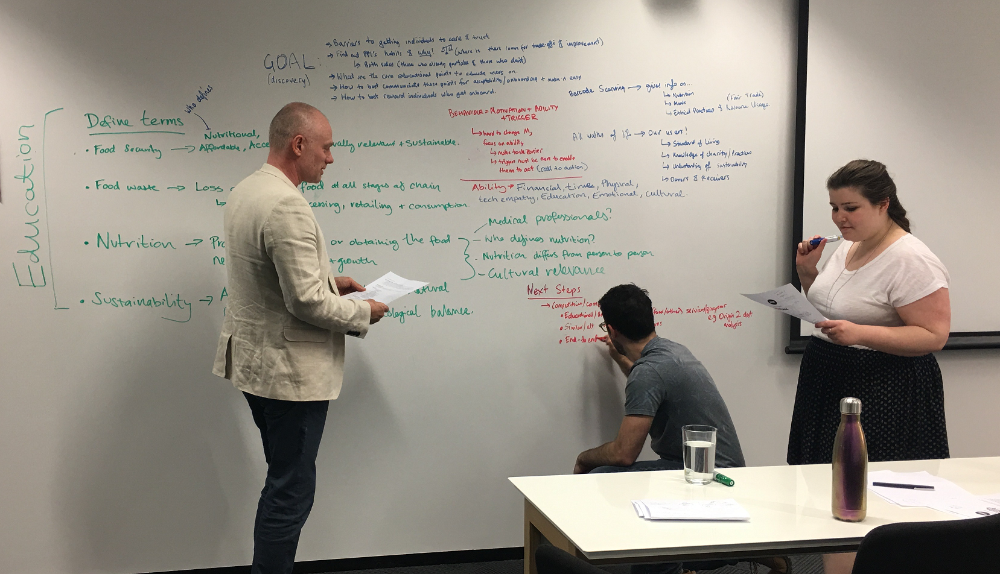
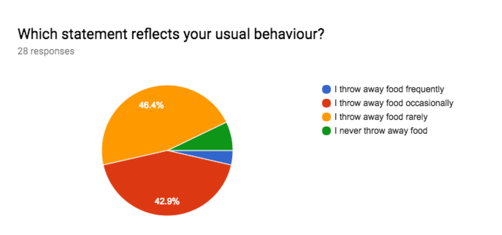
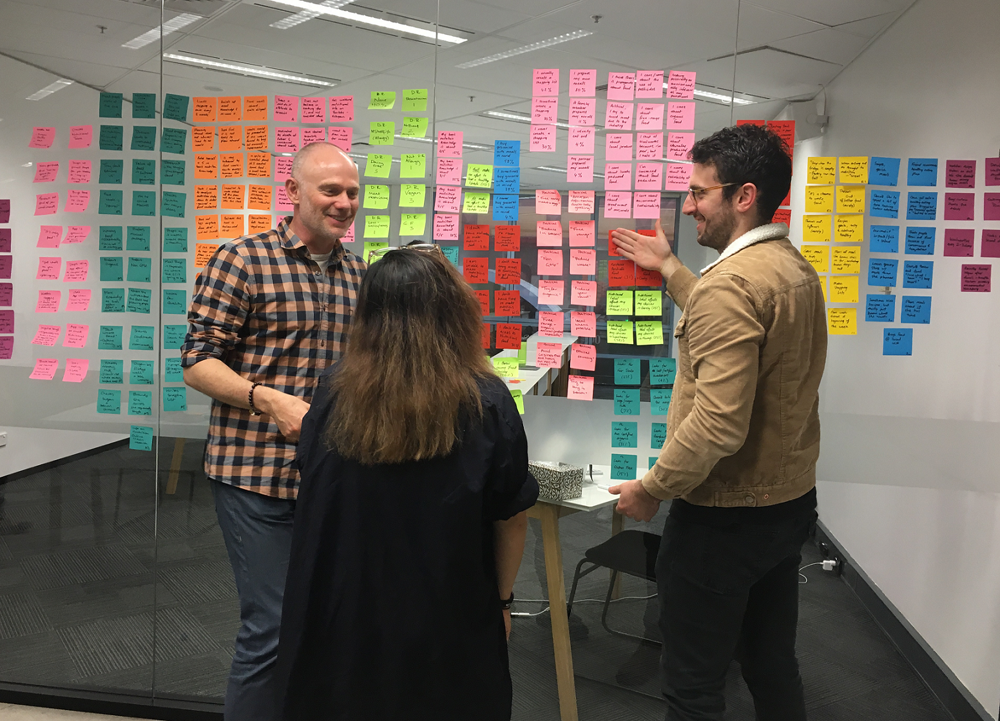
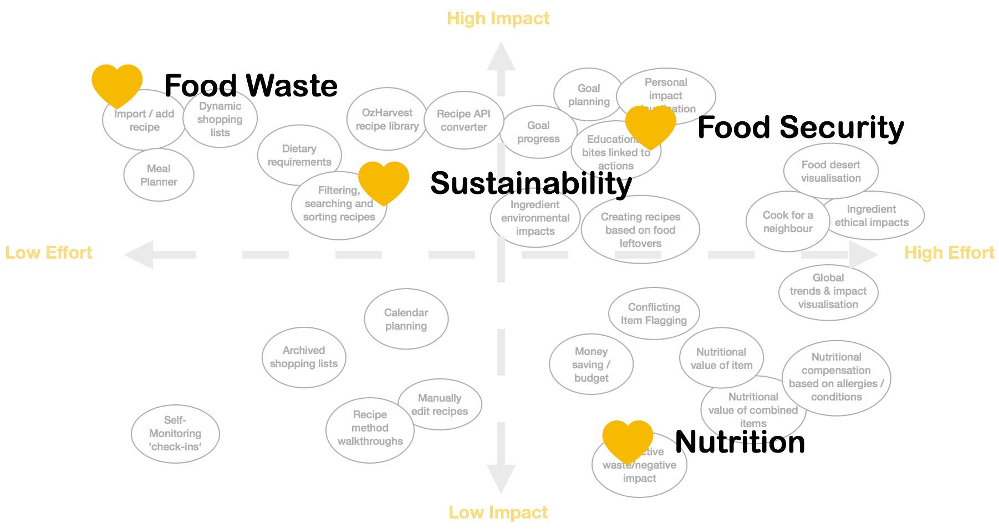
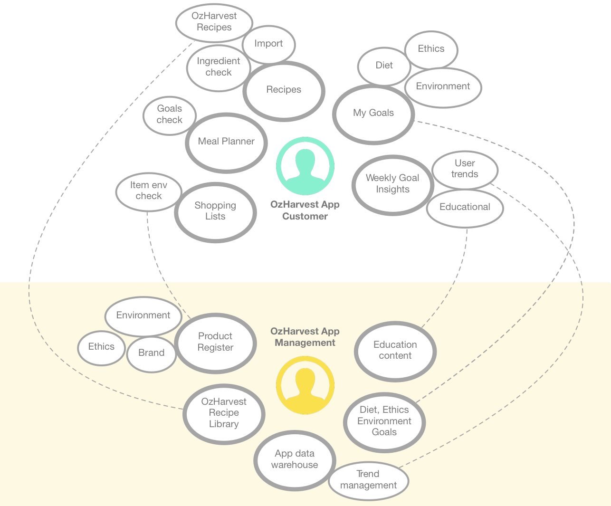

OzHarvest
Company
OzHarvest (GA Project)
Duration
2 Weeks
Team
3 UX Design Students
An ambitious goal
Motivating a general audience to make better food consumption choices.
Ozharvest is the first perishable food rescue organisation in Australia; collecting excess quality food from donors and delivering it, direct and free of charge, to more than one thousand charities across the countries. They also host their own ‘take what you need, give what you can’ supermarket. In this concept project, OzHarvest has decided to branch out from physical food rescue and redistribution. Now, they want to utilise technology to educate people on food waste, food security, good nutrition and sustainability, as well as motivate people to take action.
Our approach
With a 2-week sprint duration and such a massive goal, we immediately considered narrowing our scope, but decided to explore our assumptions and do some general knowledge research up-front. We then brainstormed an array of research methodologies that we thought could help us gain clarity on some of these topics from a general audience; knowing that we would reverse-engineer a product idea from how people relate to OzHarvest’s four pillars: food waste, food security, nutrition & sustainability.
'Stakeholder' research
Using the website as a surrogate for a stakeholder interview
We started discovery with analysis of OzHarvest’s website, which would act as our stakeholder for the purpose of the student project. We discovered their mission statement for education is ‘to increase community connectedness, improve self-worth and confidence,’ as well as getting volunteers to engage with their charitable programmes. Existing education programmes exist in the form of on-site workshops on nutrition, low-cost meals, budgeting, reading food labels, food storage & shopping/cooking tips. Finally, they have an existing framework of advice, recipes, research and statistics, centreing around food-waste, which provided a framework to build upon and to validate our ideas against throughout our design process.
Reducing food waste quickly became our core focus:
- Buy what you need (check what food you have already, plan your meals, write a shopping list, shop for less more often)
- Eat what you buy (know what’s in your fridge, notice expiry dates and make those items more front-and-center, combine what you have into a recipe, freeze what you don’t need)
The extent of the food waste issue in Australia:
- 1 in 5 shopping bags or $3'800 per household ends up in the bin
- >644'000 people receive food relief: 1/3 are children
- Food Waste costs the economy $20bn AUD/year
Comparative Service Analysis
Looking at services in the food space and general behaviour change products
Wanting to understand the elements of successful digital solutions in the landscape of behaviour change, ethical education and motivation, we took a detailed look at the features and functions of various popular products and services. This investigation told us:
- Food & Recipe applications do not go deeper than meal planning and shopping facilitation; there is little ethical and education beyond natural social governance.
- Highly marketed features: allowing users to select their own values, reinforcing feedback (rewards & achievements), setting challenges, helping people plan, giving people a ‘why’ to the what (education), variety in methods & paths to a goal, and statistics.
- There are a variety of behaviour change & gameration patterns that vary in usability, but which provide inspiration for effective UI flows.
User research
Surveys and interviews to gain behavioural insights
Ozharvest’s ambitious goal concerns the entirety of the population, so it was key to research a vast cross-section of people up front. We performed surveys to uncover behaviours, and then later interviews to drill down into motivations and beliefs. To get a broad cross-section of the population we approached people on the street, guerilla-style, and to focus the questions we asked only about their habits surrounding dinner. We wanted to learn people’s habits around shopping, consumption, food waste and the factors dictating their purchases, including any environmental or ethical considerations.
 Research Synthesis
Surveys and interviews to gain behavioural insights
| Insight | Implication |
|---|---|
| Many plan meals and make shopping lists but still waste food. They: plan insufficiently, leave the grocery store with more than they planned, do not accurately assess quantities & skip planned meals (instead eating food of convenience, impulse or due to change plans). | Facilitate the planning and shopping experience with accessibility, efficiency, accuracy and low time/energy investment. This should improve consumption efficiency & lessen food waste. |
| People widely hold conflicting beliefs around food waste; simultaneously holding guilt and acceptance of a cultural norm. | Negative emotions are poor drivers of behaviour change; we need to address food waste with positive motivators like money saved and providing positive feedback. |
Most are not confident that their shopping and eating choices are right or optimal
both for health and sustainability. Due to:
|
Provide simple, actionable, trustworthy and provable information to people, then they will be more likely to absorb such information, remember it and act upon it. Ingest this into the experience and link it with simple and easy-to-implement calls to action. |
| The majority of participant’s listed one or more way they attempt to minimize their consumption footprint, yet do not feel they are doing all they can. | Most people are on board with OzHarvest’s four pillars to some extent. We could leverage this to help them achieve pre-existing goals as well as introduce ways for them expand their impact and discover new goals. |
| Some people had made behavioural changes in the direction of OzHarvest’s four pillars. Their stories expressed that they received inspiration, information, organisation and occasionally feedback. | If we can provide a variety of motivators, simplifiers and calls to action, we will be more likely to change behaviour. |
Personas
High-level sounding boards for assumptions & potential solutions
We used a behaviour model to generate a hypothesis for infuencing people’s behaviour around food waste. BJ Fogg’s behaviour model indicates that three elements must align at the same moment for a behaviour to occur: a value (Motivation), the accessibility of outcome (Ability) and a call to action (Trigger).
Behaviour =
Ability
Proposition: Advance planning and shopping for meals increases consumption efficiency.
If we support people in planning, shopping and meal preparation, then they will waste less food because they will be more likely to buy and use only what they know they need.
+ Motivation
Proposition: People are more likely to achieve their goals when they express them and receive support.
If we encourage users to consider their goals and values around food, then we will be able to support those goals through product features because users need relevant interactions that reinforce their objectives.
+ Trigger
Proposition: People repeat engagement with experiences that have rewarding outcomes.
If we reveal delightful and unexpected insights based on the effects of user action, then solution utilisation will increase because it will engender value attached to their actions and deepen their knowledge and investment.
Solution Statement
Providing convenience and portability to support day-to-day adoption
Solution Statement: Our idea to address OzHarvest’s problem is to create an app which enables people to plan & purchase food efficiently, as well as learn about the effects of their choices. The main groups of people who will benefit from our solution will be the time/money poor and those with personal concerns regarding their consumption.
At this point, the “Overwhelmed Idealist” emerged as the primary persona, as it meant preaching to the proverbial choir and providing them with an easy way to live their values. We believed that by fuelling the knowledge and facilitating the goals of Idealists, we would cover the core functionality for all three personas in the consumption space. From here, we could provide simpler, less feature heavy pathways to meet the more basic needs of the other personas with a vision to converting them into idealists later. We would do this by decreasing the difficulty of living their values, giving them encouragement and placing delightful & incremental triggers throughout the process.
Ideation and feature prioritization
So little time to design...
With a sprint goal to generate a Minimum Viable Product (MVP) concept, we brainstormed feature ideas related to our hypotheses and mapped them together on an impact-effort matrix to help constrain ourselves. We gave more weight to ideas which supported behaviour change through improving user ability primarily, followed by those which increased motivation or triggers from the BJ Fogg Model.
Sketches & Walkthroughs
After conducting a design studio, further sketching and talking through our ideas we settled on core screens and took them to our classmates who would act as our users for concept walkthroughs. We learned:
- There were “too many features” which lead to confusion. Dreaded ‘featuritis’.
- The process was too rigid, needed more flexible paths or the ability to skip sections.
- The On-boarding was too overwhelming.
- They felt judged by the app, and only wanted positive reinforcement for feedback.
Annotated Wireframes
User flows that enable differing levels of investment
We decided to create “happy-path” wire-flows and stories tied to the “Idealist” and “Fast-Laner” personas to ensure they were able to only invest the time and energy that matches the value return they desire from the app in the early stages of adoption. This meant that core features like planning, recipe libraries, search & filtering, and shopping lists would be front-and-centre while secondary features like causes, goal setting and impact visualization would be less visible or at least optional.
Handing it over
Understanding tech requirements & next steps
Function Map
To help OzHarvest better understand the investment and requirements to make our solution functional, we developed a function map that details the supporting infrastructure necessary to manage the application at a high level.
Next Steps
As a team we determined high-level next steps for the hypothetical situation of the projects continuance:
- Host a progress meeting with OzHarvest to walk through project and confirm feasibility and alignment.
- Create a prototype to validate with user scenario testing to help answer: will people use it?
- Determine a charismatic and supportive personality for the application that aligns with OzHarvest’s brand and mission.
- Generate or source educational material and experiment with creative and innovate ways to convey it; infographics, data visualisations, interactive information & multi-faced linking for example.
- Concept test features beyond MVP with members of the public.
I wasn’t aware of OzHarvest before being handed this fictional brief, but quickly began noticing the presence of their van’s across Sydney’s CBD and appreciating their presence. This assignment offered an opportunity to practice research skills, interview people in vox-pop style and work together with a team from diverse backgrounds. I definitely believe the scope was insane for a 2-week sprint, but it stretched us and forced us to come up with and execute on a plan which was a valuable experience.
Beyond the core skills developed during the project, I appreciated learning about the utility of sophisticated concept maps in context of designing a solution from Alastair. I also recognised a deeper aptitude in myself than expected for elaborating on people’s ideas and facilitating debates between team-members for mutually beneficial outcomes. Lastly, it was invaluable to learn the importance of creating a roadmap upfront which constrains the scope to something feasible, given the project length.